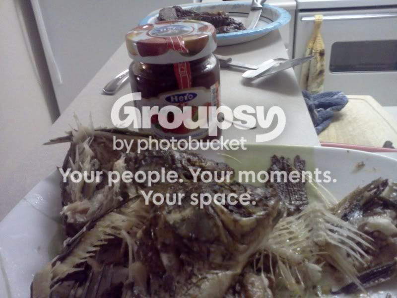

Nav can cook, and you can too!
When I was in elementary school, we would hang out in the back of dad's jewelry store and watch episodes of Remington Steele and Yan Can Cook. All I remember is that Pierce Brosnan is a good lookin' man, and "If Yan can cook, can too!!" This engendered in me a desire and natural willingness to try my hand at cooking, and have the confidence to succeed. Ok, no it didn't, but I still try to cook sometimes. And Catherine tries (and fails) to wear a hat like a gangster. She wouldn't listen when I told her the hat had too much tilt.
Here are some recent cooking excursions for your viewing displeasure.
We made a massive delirious omlette. (There's no link to the video of this, but if you watch the movie Paulie with Tony Shalhoub, it'll make sense. Yes, you have to watch the whole movie.) It had eggs, onions, spinach, mushrooms, cheese and cilantro. And it was delirious.
We also made Meatloaf and Potatoes:
Catherine made some cookies, that we subsequently forgot were in the oven when we went to rent a movie.
It was a good movie. I don't remember what it was, but we haven't rented a bad one in a while.
We made Jelly-Fish (not to be confused with jellyfish, cuz you'll die) in honor of Andrew.
We also made an epic massive meatloaf.
That's ground beef, cheese, brats, bacon, onions, bell peppers, and some other stuff. I can't remember, but it was delicious and lasted for about a week.
This week, we ate at Sweet Tomatoes. We go there almost every Saturday, it's something of a tradition now. A delicious tradition.
And finally, we thought this picture was pretty funny.
Unfortunately the catfood was not nearly as delectable as the rest of the fare posted herein.
Until Next Time! If we live that long.
{kind=link}
Here are some recent cooking excursions for your viewing displeasure.
We made a massive delirious omlette. (There's no link to the video of this, but if you watch the movie Paulie with Tony Shalhoub, it'll make sense. Yes, you have to watch the whole movie.) It had eggs, onions, spinach, mushrooms, cheese and cilantro. And it was delirious.
We also made Meatloaf and Potatoes:
Catherine made some cookies, that we subsequently forgot were in the oven when we went to rent a movie.
It was a good movie. I don't remember what it was, but we haven't rented a bad one in a while.
We made Jelly-Fish (not to be confused with jellyfish, cuz you'll die) in honor of Andrew.

We also made an epic massive meatloaf.
That's ground beef, cheese, brats, bacon, onions, bell peppers, and some other stuff. I can't remember, but it was delicious and lasted for about a week.
This week, we ate at Sweet Tomatoes. We go there almost every Saturday, it's something of a tradition now. A delicious tradition.
And finally, we thought this picture was pretty funny.
Unfortunately the catfood was not nearly as delectable as the rest of the fare posted herein.
Until Next Time! If we live that long.